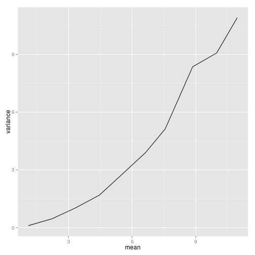

Generalized Linear & Additive Models
http://ryanhope.github.com/glm-in-r
Ryan Hope
CogWorks Lab, Rensselaer Polytechnic Institute
Generalized Linear Models (GLM)
- GLM, pronounced glim
- When to use
- when the variance is not constant
- when the errors are not normally distributed
- Certain types of response variables violate these two standard assumptions
Constant variance assumption
d = ldply(0:10, function(m) {
d=rnorm(1000,mean=m)
data.frame(mean=mean(d),
variance=var(d))
})
ggplot(d) +
geom_line(aes(x=mean,
y=variance)) +
coord_cartesian(ylim=c(0,2),
xlim=c(0,10))
Gamma variance
d = ldply(0:10, function(m) {
ra = (m + sqrt( m^2 + 4*(m/3)^2 ) ) /
( 2 * (m/3)^2 )
sh = 1 + m * ra
d=rgamma(1000,shape=sh,rate=ra)
data.frame(mean=mean(d),
variance=var(d))
})
ggplot(d) +
geom_line(aes(x=mean,
y=variance)) +

Properties of GLMs
- the error structure
- the linear predictor
- the link function
Error structure
In the real world, analyses need to be done on data with non-normal errors, for example:
- errors that are strongly skewed
- errors that are kurtotic
- errors that are strictly bounded (as in proportions)
- errors that cannot lead to negative fitted values (as in counts)
In the past, the only tools available to deal with these problems were transformations of the response variable or the adoption of non-parametric methods.
Specifying the error structure
A GLM allows the specification of a variety of different error distributions:
- Poisson errors, useful with count data
- binomial errors, useful with data on proportions
- gamma errors, useful with data showing constant coefficient of variation
- exponential errors, useful with data on time to death (survival analysis)
The error structure is defined by means of the family directive, used as part of the model formula. Examples:
glm(y~z,family=poison)glm(y~z,family=binomial)
Linear predictor
The structure of the model relates each observed y value to a predicted value. The predicted value is obtained by tranformation of the value emerging from the linear predictor. The linear predictor, \(\eta\) (eta), is a linear sum of the effects of one or more explanatory variables, \(x_j\):
\[{\eta}_i=\sum_{j=1}^{p} x_{ij}\beta_j\]
where the xs are the values of the p different explanatory variables, and the $\beta$s are the (usually) unknown parameters to be estimated from the data. The right-hand side of the equation is called the linear structure.
Linear predictor examples
- Simple regression- linear predictor is the sum of two terms whose parameters are the intercept and slope
- One-way ANOVA w/ 4 treatments- the linear predictor is the sum of the four terms leading to the estimation of the mean for each level of the factor
- If there are covariates, they add one term each to the linear predictor (the slope of each relationship)
- Interaction terms in a factorial ANOVA add one or more parameters to the linear predictor, depending upon the degress of freedom for each factor (e.g. there would be three extra parameters for the interaction between a two-level factor and a four-level factor, because (2-1)x(4-1)=3)
Determining the fit of a GLM
To determine the first of a given model, a GLM evaluate the linear predictor for each value of the response variable, then compares the predicted value with a transformed value of y
The transformation to be employed is specified in the link function
The fitted value is computed by applying the reciprocal of the link function, in order to get back the original scale of measurement of the response value
Link function
When dealing with GLMs, grasping the relationship between the values of the response variable (as measured in the data and predicted by the model in fitted values) and the linear predictor can often be difficult.
- The link function relates the mean value of y to its linear predictor. \[\eta=g(\mu)\]
- The linear predictor, \(\eta\), emerges from the linear model as a sum of the terms for each of the p parameters
- This is not a value of y (except in the special case of the identity link)
- The value of \(\eta\) is obtained by transforming the value of y by the link function
- The predicted value of y is obtained by applying the inverse link function to \(\eta\)
Picking a link function
- Ensure that the fitted values stay within reasonable bounds
- The most appropriate link function is the one which produces the minimum residual deviance
Deviance: measuring the goodness of fit of a GLM
- The fitted values produced by the modely are most likely not going to perfectly match your data
- The measure of discrepency in a GLM to assess the goodness of fit of the model to he data is called the deviance
- Deviance is defined as -2 times the difference in log-likelyhood between the current model and a saturdated model (i.e. a model that fits the data perfectly)
- Deviance is estimated in different ways for different families within glm
- Where there is grouping structure in the data leading to spatial or temporal pseudoreplication, you will need to use generalized mixed models (lmer) with the appropriate error family